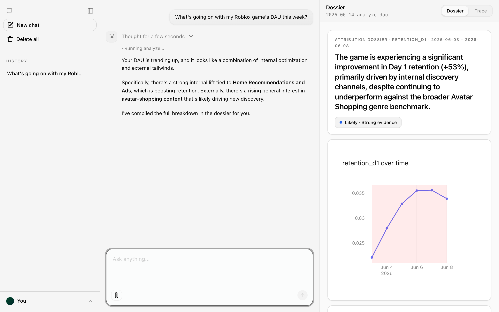

Claw-a-thon 2026 · Data Analysis
The AI analyst that explains why your game's metrics moved — and shows its evidence.
internal vs market · every claim cited · scenarios, not decisions
internal vs market
cited, every claim
The problem
DAU drops 22% overnight. The team burns days arguing our update? vs a genre-wide slump? — pulling dashboards by hand, no audit trail, no agreement.
BI dashboards
Show you what happened. Never why.
LLM copilots
Will say why — and hallucinate the numbers.
Nothing answers why, honestly.
Demo
one sentence drives a five-stage pipeline
You
"What's going on with my Roblox game's DAU this week?"
Attribution dossier · DAU · Jun 1 – 14
You vs the market · indexed to 100
Genre-wide CCU fell ~18% the same week.
Market Likely E2,E5v2.3 added load time on mobile-SEA.
Internal Possible E7It read the data, crawled the market, ran four analyses, and wrote this — every line cited.
The catch
LLMs invent confident percentages. If an AI says revenue dropped because of one region — can you bet a roadmap on it?
The answer
The LLM only routes intent, maps columns, and writes the narrative. Every number traces to a ledger entry. An uncited claim never ships.
Layer 1 · Anomaly
Change-point detection (ruptures · PELT) finds the break: Jun 8.
STL decomposition quantifies how anomalous it is vs seasonality.
→ E1, E2 written to the ledger
DAU over time
Layer 2 · Internal vs market
CausalImpact-style counterfactual (BSTS) vs a genre benchmark.
"What would DAU have been without the event?" The gap is the true internal effect.
You vs genre · indexed to 100
The verdict
A genre-wide dip drove most of the −22%. Only a slice was you.
benchmark tiers: snapshot → Roblox/Steam crawl → Perplexity
Layer 3 · Segment root-cause
Adtributor attributes the internal residual to a dimension — as a citable percentage.
Internal residual
from the v2.3 update on mobile · SEA.
Layer 4 · Confidence
How likely is this cause — and how good is the evidence for it?
Every claim sits on a likelihood × evidence grid, so a confident guess and a real finding never look the same.
Layer 5 · Honesty
Assumptions & gaps
A self-consistency gate (N samples must agree) + the citation validator reject shaky claims.
The ethos
The human decides.
How it's built
Proof
✓ 177 passing tests · TDD throughout
✓ Engine verified end-to-end with a fake LLM
✓ Deployed live on AgentBase + Vercel
✓ Real Roblox / Steam benchmark crawl
Scan it — it's live
game-attribution-agent.vercel.app
An actual run — cited, live

Game Attribution Agent
Every claim cited. Every gap admitted. Scenarios, not decisions.
Next: multi-game portfolio views · a toolbox that grows (tool promotion) · admin-only hardening.
Scan it — it's live
game-attribution-agent.vercel.app